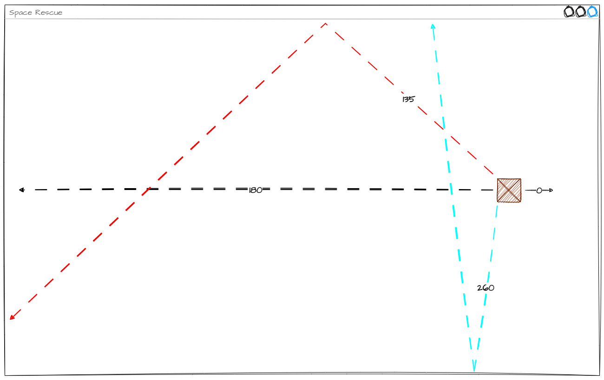
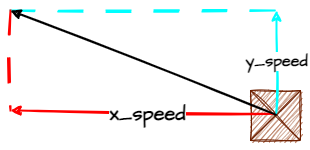
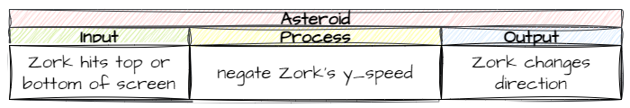
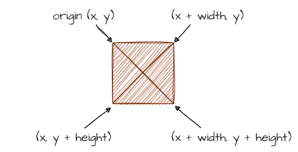
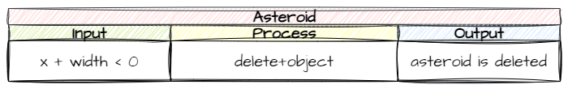

Animate Asteroids#
In this lesson we are going to cover all the animations for asteroid. In particular:
initial movement left but at a random angle
bouncing off the top and bottom of the screen
de-spawning the asteroid when it moves past the left of the screen
Lets get going.
Initial movement#
Planning#
So far, all of our Object movements have been using the cartesian coordinates of the screen, specifically, up and down the y-axis, but we want our asteroids to move diagonally, on both the x-axis and the y-axis. We could use trigonometry to work out the x_speed and y_speed required to make this happen, but, fortunately, Steven Tucker has already done the hard work for us.
If you check the RoomObject Methods in the docs you will see the set_direction method that allows us to make the object move in a designated direction at a designated speed. The docs explain that 0° is moving right. So, we now know our mechanism to make the asteroids move diagonally. But what value should we make them move?
We want some randomness to the direction, so we need to choose a value from a range. Let’s consider our options.

We can see that:
180° (black line) will just move strait across the screen
135° (red line) is 45° less than 180° and gives a nice bounce across the screen
260° (blue line) is 80° more than 180° and will just bounce up and down and barely transverse the screen.
From the we can see that the best range of angles would be 180° plus or minus 45°, or for our purposes the values 135 to 225.
Putting all of this into an IPO table

Objects/Asteroid.py#
Let’s put that plan into code.
Open Objects/Asteroid.py and add the highlighted code below:
1from GameFrame import RoomObject
2import random
3
4class Asteroid(RoomObject):
5 """
6 A class for Zorks danerous obstacles
7 """
8
9 def __init__(self, room, x, y):
10 """
11 Initialise the Asteroid object
12 """
13 # include attributes and methods from RoomObject
14 RoomObject.__init__(self,room, x, y)
15
16 # set image
17 image = self.load_image("asteroid.png")
18 self.set_image(image,50,49)
19
20 # set travel direction
21 angle = random.randint(135,225)
22 self.set_direction(angle, 10)
Let’s unpack that code:
line 2: we need to import the
randommodule to userandintline 21: using
randintto provide a number between 135 and 225line 22: set the asteroid in motion at the random angle and speed of 10
Save Asteroid.py and then run MainController.py to test your code.
Bouncing off top and bottom of screen#
Planning#
We want the asteroids to bounce off the top and bottom of the screen so they stay inside in window. To do this we need to understand how the set_direction method works.
set_direction makes an object move in a specified direction at a specified speed on the screen. Since the screen is a Cartesian plane (has x and y coordinates) this movement is made up of both x and y components.

When we use set_direction GameFrame uses Trigonometry to calculate the x_speed and the y_speed. With this understanding we already know how to bounce an object off the top and bottom, because we have already done it.
We made the Zork object bounce off the top and bottom of the screen by negating it’s y_speed. The only difference between Zork and an asteroid is that Zork’s x_speed is 0.
Let’s put our understanding into an IPO.

Now to the code.
Objects/Asteroid.py#
Just like in the Zork Object, we will need to:
every step , make a call to a keep_in_room method
the keep_in_room method negates the asteroid’s
y_speed, if the asteroid is touching the top or bottom of the screen.
Open Objects/Asteroid.py and add the highlighted code below:
1from GameFrame import RoomObject, Globals
2import random
3
4class Asteroid(RoomObject):
5 """
6 A class for Zorks danerous obstacles
7 """
8
9 def __init__(self, room, x, y):
10 """
11 Initialise the Asteroid object
12 """
13 # include attributes and methods from RoomObject
14 RoomObject.__init__(self,room, x, y)
15
16 # set image
17 image = self.load_image("asteroid.png")
18 self.set_image(image,50,49)
19
20 # set travel direction
21 angle = random.randint(135,225)
22 self.set_direction(angle, 10)
23
24 def step(self):
25 """
26 Determines what happens to the asteroid on each tick of the game clock
27 """
28 self.keep_in_room()
29
30 def keep_in_room(self):
31 """
32 Keeps the asteroid inside the top and bottom room limits
33 """
34 if self.y < 0:
35 self.y = 0
36 self.y_speed *= -1
37 elif self.y > Globals.SCREEN_HEIGHT - self.height:
38 self.y = Globals.SCREEN_HEIGHT - self.height
39 self.y_speed *= -1
This is almost a copy and paste from the Zork class, so we won’t bother breaking it down.
Save Asteroid.py and then run MainController.py to test your code.
De-spawning asteroids#
When a asteroid exits the screen to the left, we want to destroy it. Why? Well, each object takes up a small bit of memory. If we fail to destroy them, all these little bits of memory will add up and degrade the computer’s performance and eventually crash the system. This is called a memory leak. Although it would take a very long game for our asteroids to overwhelm your computer, it is good programming practice to destroy objects no longer in use.
Memory leaks
A memory leak is a situation in computer programming when a program or process fails to release memory that it no longer needs or is not actively using. As a result, the program keeps consuming more and more memory over time, which can eventually lead to performance issues and even crashes.
Planning#
We know how to identify when an object touches the top or bottom of the screen, but how do we know if an object moves past the left-hand boundary of the screen?
Let’s work this out:
The left-right axis of the screen is the x-axis, so we are looking at the x value
The screen’s left boundary’s x value is
0An object has left the room when it’s right-hand side is less than the screen’s left boundary
The value of the right hand side of an object is
x + width(see below)

Therefore the event that triggers our code is when object.x + object.width < 0.
So, we have our trigger, now we need to work out how to de-spawn out object. We’re talking about object actions, so lets check the RoomObject methods in the docs. Notice the delete_object method, that seems about right.
Summarising this gives the following IPO table:

Lets put this in code
Objects/Asteroid.py#
Still working in Objects/Asteroid.py, add the highlighted code below:
1from GameFrame import RoomObject, Globals
2import random
3
4class Asteroid(RoomObject):
5 """
6 A class for Zorks danerous obstacles
7 """
8
9 def __init__(self, room, x, y):
10 """
11 Initialise the Asteroid object
12 """
13 # include attributes and methods from RoomObject
14 RoomObject.__init__(self,room, x, y)
15
16 # set image
17 image = self.load_image("asteroid.png")
18 self.set_image(image,50,49)
19
20 # set travel direction
21 angle = random.randint(135,225)
22 self.set_direction(angle, 10)
23
24 def step(self):
25 """
26 Determines what happens to the asteroid on each tick of the game clock
27 """
28 self.keep_in_room()
29 self.outside_of_room()
30
31 def keep_in_room(self):
32 """
33 Keeps the asteroid inside the top and bottom room limits
34 """
35 if self.y < 0:
36 self.y = 0
37 self.y_speed *= -1
38 elif self.y > Globals.SCREEN_HEIGHT - self.height:
39 self.y = Globals.SCREEN_HEIGHT - self.height
40 self.y_speed *= -1
41
42 def outside_of_room(self):
43 """
44 removes asteroid that have exited the room
45 """
46 if self.x + self.width < 0:
47 self.room.delete_object(self)
Lets unpack some of the code we added:
line 28: every tick of the game clock we need to test if the asteroid has left the screen
line 46: this is the trigger we had in our IPO table
line 47: this could be a bit confusing
delete_object→ we want to delete an objectself.room→ the object is in the room of this object(self)→ the object is this object
self vs other
The syntax for delete_object seems unnecessarily repeatative. Why couldn’t we just say delete this object? Well the syntax hints at a wider application of the delete_object method.
It is possible to:
delete other objects in this room
delete objects in other rooms
Save Objects/Asteroid.py and run MainController.py to test your code.
How did it go? Was the asteroid de-spawned? How did you know?
The problem is that the asteroid is already off the screen when the outside_of_room method is called, so we can’t tell if it has been called. In these situations, it is useful to use print and the terminal to see what is going on inside your program.
Go back to Objects/Asteroid.py and add the highlighted code below:
42 def outside_of_room(self):
43 """
44 removes asteroid that have exited the room
45 """
46 if self.x + self.width < 0:
47 print("asteroid deleted")
48 self.room.delete_object(self)
Again Save Objects/Asteroid.py and run MainController.py to test your code. Now, every time the outside_of_room method is called asteroid deleted will be printed in the terminal.
Commit and Push#
We have finished and tested another section of code so we should make a Git commit.
To do this:
In GitHub Desktop go to the bottom left-hand box and write into the summary
Created GamePlay room.Click on Commit to main
Click on Push origin
Now the work from this lesson is committed and synced with the online repo.
Completed File States#
Below are all the files we used in this lesson in their finished state. Use this to check if your code is correct.
Objects/Asteroid.py#
1from GameFrame import RoomObject, Globals
2import random
3
4class Asteroid(RoomObject):
5 """
6 A class for Zorks danerous obstacles
7 """
8
9 def __init__(self, room, x, y):
10 """
11 Initialise the Asteroid object
12 """
13 # include attributes and methods from RoomObject
14 RoomObject.__init__(self,room, x, y)
15
16 # set image
17 image = self.load_image("asteroid.png")
18 self.set_image(image,50,49)
19
20 # set travel direction
21 angle = random.randint(135,225)
22 self.set_direction(angle, 10)
23
24 def step(self):
25 """
26 Determines what happens to the asteroid on each tick of the game clock
27 """
28 self.keep_in_room()
29 self.outside_of_room()
30
31 def keep_in_room(self):
32 """
33 Keeps the asteroid inside the top and bottom room limits
34 """
35 if self.y < 0:
36 self.y = 0
37 self.y_speed *= -1
38 elif self.y > Globals.SCREEN_HEIGHT - self.height:
39 self.y = Globals.SCREEN_HEIGHT - self.height
40 self.y_speed *= -1
41
42 def outside_of_room(self):
43 """
44 removes asteroid that have exited the room
45 """
46 if self.x + self.width < 0:
47 print("asteroid deleted")
48 self.room.delete_object(self)